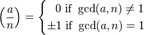
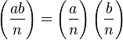
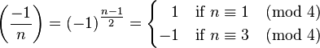
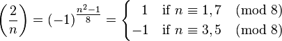

Legendre Symbol
Notes
The Legendre symbol is a quadratic character mod a prime number p with values 1,-1,0. For a nonzero integer a mod p, the Legendre symbol
)
is 1 if a is a quadratic residue, -1 if a is not a nonresidue. The Legendre symbol is zero is a = 0.
=\left(\frac{a}{p_1}\right)^{\alpha_1} \cdots \left(\frac{a}{p_k}\right)^{\alpha_k})
where




{% endblock %}